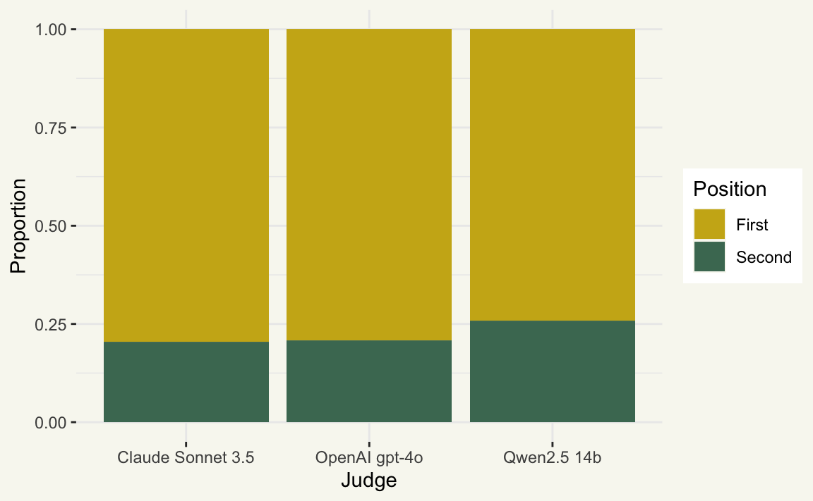
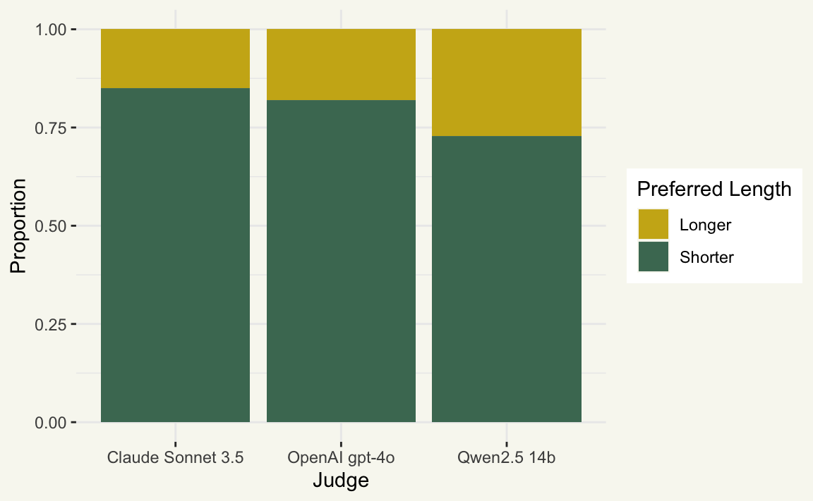
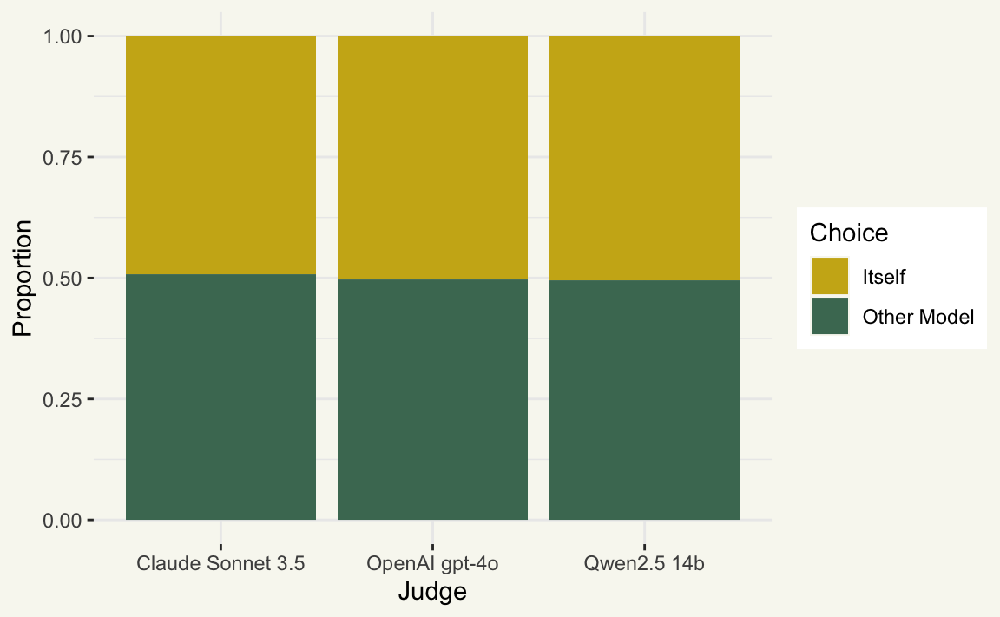
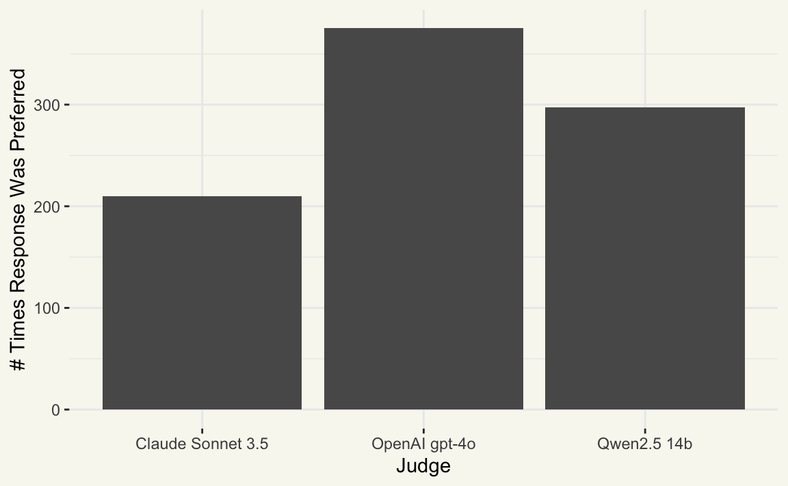

I’ve been spending some time recently learning about LLMs evaluating output from LLMs, or as its referred to in the literature, “LLM-as-a-judge.” That is, after asking a question to an LLM and receiving an answer, both the question and answer are provided to another language model and that model is asked to somehow judge whether the provided response was satisfactory.
There are all sorts of considerations that come into play when designing LLM-as-a-judge systems; LLMs can exhibit many of the same cognitive biases that humans do when judging paired comparisons.1 For example, when asked to choose between two responses, many models will prefer the one presented first, prefer the longer of the two, or prefer the one it generated itself; we’ll look into each of these effects in this blog post. In this post, I’ll examine some data I generated while prototyping out some code for evaluating ellmer outputs. That code isn’t quite usable generally yet, but the kinds of data one can pull out of it already is super interesting.2
The data
Each row in the dataset is the result of a paired comparison of two model responses. For example, consider the following question asked of a language model:
Make the bars side-by-side rather than stacked on top of each other:
ggplot(mtcars) + aes(x = cyl, fill = factor(vs)) + geom_bar()
That model’s system prompt has been set to the following:
When asked a question about R code, reply with only the code needed to answer the question. No exposition, no backticks.
Ideally, I’d like the model to respond with changes that implement the requested change and only the requested change. No exposition, no additional formatting, so something like this:
ggplot(mtcars) +
aes(x = cyl, fill = factor(vs)) +
geom_bar(position = "dodge")Now, I ask a few different models—OpenAI’s GPT-4o, Anthropic’s Claude Sonnet 3.5, and a locally hosted Qwen 2.5 model—to respond to this query. (This is an admittedly arbitrary bunch. Just what I had configured at the moment.) Then, I take a bunch of paired comparisons, where e.g. a response from GPT-4o is compared to one from Claude. Those comparisons are evaluated by letting each of GPT-4o, Claude, and Qwen take their turn as a “judge,” where they’re prompted to choose one or the other based on a reference “target” and some criteria. In this example, I blended the prompts from two recent research papers (Ye et al. 2024; Schroeder and Wood-Doughty 2024):
Please act as an impartial judge and evaluate the quality of the responses provided by two AI assistants to the user question displayed below. You should choose the assistant that follows the user’s instructions and best resembles the provided target response.
Your evaluation should consider factors such as the helpfulness, relevance, accuracy, conciseness, and level of detail of their responses, though be terse and don’t provide your reasoning, just your judgement.
- Ensure that the order in which the responses were presented does not influence your decision.
- Do not allow the length of the responses to influence your evaluation.
- Do not favor certain names of the assistants.
- Be as objective as possible.
Output your final verdict by strictly following this format: “Best Response: [[letter]]”. Include the brackets, so “Best Response: [[A]]” if assistant A is better, “Best Response: [[B]]” if assistant B is better.
<userInput>
Make the bars side-by-side rather than stacked on top of each other:
ggplot(mtcars) + aes(x = cyl, fill = factor(vs)) + geom_bar()</userInput>
<targetResponse>
ggplot(mtcars) + aes(x = cyl, fill = factor(vs)) + geom_bar(position = "dodge")</targetResponse>
<assistantResponseA>
ggplot(mtcars) + aes(x = cyl, fill = factor(vs)) + geom_bar(position = position_dodge())</assistantResponseA>
<assistantResponseB>
ggplot(mtcars) + aes(x = cyl, fill = factor(vs)) + geom_bar(position = "dodge") + scale_fill_brewer(palette = "Set2") + labs( x = "Number of Cylinders", y = "Count", fill = "Engine Type" ) + theme_minimal()</assistantResponseB>
I’ve added some code fences inside the XML tags in this example prompt just for readability, but they wouldn’t actually appear in the prompt (so that the models could penalize models that include code fences despite being asked not to).
Note that, in this prompt, I don’t note which models each response comes from, instead referring to them as “Response A” and “Response B.” This is intended to guard against the most blatant “That result is labeled Claude and I am Claude” kind of self-enhancement bias.
Rows: 882
Columns: 9
$ config_a <chr> "OpenAI gpt-4o", "OpenAI gpt-4o", "OpenAI gpt…
$ config_b <chr> "Qwen2.5 14b", "Qwen2.5 14b", "Qwen2.5 14b", …
$ judge <chr> "Claude Sonnet 3.5", "OpenAI gpt-4o", "Qwen2.…
$ choice <chr> "OpenAI gpt-4o", "OpenAI gpt-4o", "OpenAI gpt…
$ input <chr> "Add a square in each box to show the mean:\n…
$ target <chr> "ggplot(mtcars, aes(x = factor(cyl), y = mpg)…
$ response_a <chr> "ggplot(mtcars, aes(x = factor(cyl), y = mpg)…
$ response_b <chr> "ggplot(mtcars, aes(x = factor(cyl), y = mpg)…
$ response_judge <chr> "Best Response: [[A]]", "Best Response: [[A]]…Each row in this data represents one paired comparison on an LLM eval task centered on writing, revising, and debugging ggplot2 code. Column-wise:
-
config_aandconfig_bare descriptions of the models used to generate a response -
judgeis the model used to judge the responses fromconfig_aandconfig_b -
choiceis the value ofconfig_aorconfig_bchosen by the judge, orNAif it didn’t make a decision. -
inputis the user request,targetis the “ideal” output, andresponse_*variables represent the raw output from each model.
I let three models take a go at the eval and gave the same three each a turn at being the judge:
[1] "Claude Sonnet 3.5" "OpenAI gpt-4o" "Qwen2.5 14b" [1] "Claude Sonnet 3.5" "OpenAI gpt-4o" "Qwen2.5 14b" If you’re interested in poking at this data yourself, the raw data is here. It’s worth saying that this data is very limited in its practical utility, and the analyses in this blog post are just for funsies.
Position bias
LLMs tend to exhibit position bias when making paired comparisons, where they tend to prefer the first response presented to them over the second (or vice versa) despite response quality (Wang et al. 2023). For the purposes of this experiment, I just assign one model to be config_a and the other config_b randomly, though there’s some research out there proposing better ways to address this issue. We can see though that each of these three models seem to demonstrate substantial position bias:
ggplot2_evals %>%
mutate(
choice_position = if_else(choice == config_a, "First", "Second")
) %>%
ggplot() +
aes(x = judge, fill = choice_position) +
geom_bar(position = "fill") +
labs(x = "Judge", y = "Proportion", fill = "Position")
A more rigorous way to quantify this would be position consistency, where we run the comparison with both orders and see how often the model prefers the same response either way (Gu et al. 2025).
Verbosity bias
Another bias that many LLMs seem to demonstrate is verbosity bias, where longer responses are preferred over shorter ones (Ye et al. 2024). One way we could measure this is how often in this data models choose the response that has more characters.
ggplot2_evals %>%
mutate(
chose_a = choice == config_a,
a_longer_than_b = nchar(response_a) > nchar(response_b),
choice_length =
if_else(
(a_longer_than_b & chose_a) | (!a_longer_than_b & !chose_a),
"Longer",
"Shorter"
)
) %>%
ggplot() +
geom_bar(position = "fill") +
aes(x = judge, fill = choice_length) +
labs(x = "Judge", y = "Proportion", fill = "Preferred Length")
At least by this simplistic metric, verbosity bias in the “longer is better” direction doesn’t seem to be the case.3 At the same time, the models are definitely preferring the shorter responses over the longer ones in this data, though this may just be the (desired) effect of models choosing the most minimal solution to the problem.
Self-enhancement bias
Another interesting effect is self-enhancement bias, where models are likely to prefer their own answer over one supplied by another model, even when they don’t know where a given response arises from (Ye et al. 2024).
ggplot2_evals %>%
rowwise() %>%
mutate(judged_itself = judge %in% c(config_a, config_b)) %>%
filter(judged_itself) %>%
mutate(
choice_self = if_else(judge == choice, "Itself", "Other Model")
) %>%
ggplot() +
aes(x = judge, fill = choice_self) +
geom_bar(position = "fill") +
labs(x = "Judge", y = "Proportion", fill = "Choice")
In this case, we really don’t see that at all. It may be the case in this example that, given there are generally a limited set of ways to get to the “right” answer in this eval, models don’t have much of an opportunity to display their “taste,” which is presumably the thing they’re exhibiting when they display this bias.
Okay, but who won?
This data really isn’t good enough to state we’ve done anything quite resembling an “eval,” but we can at least check out which model gave the preferred response most often:
ggplot2_evals %>%
ggplot() +
aes(x = choice) +
geom_bar() +
labs(x = "Judge", y = "# Times Response Was Preferred")
Okay, Qwen!